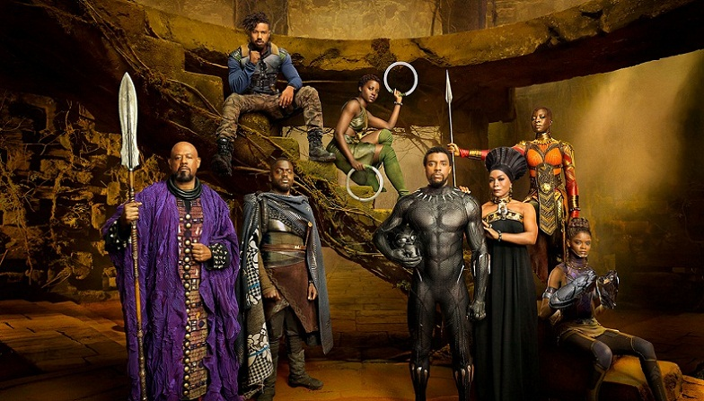
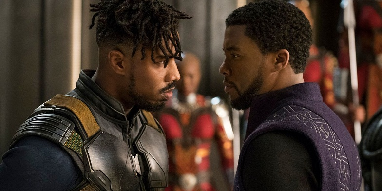
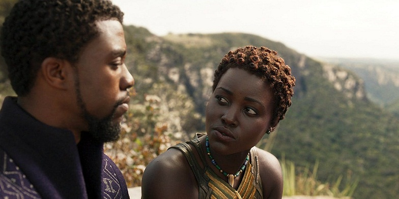
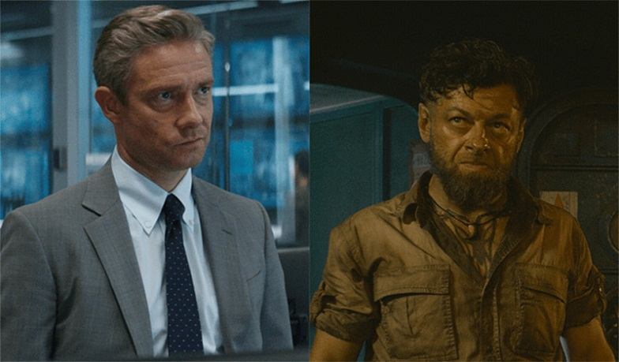

Sau khi bắt hung thủ đã giết hại vua cha trong Captian America: Civil War, T’Challa trở về vương quốc Wakanda để thừa kế ngai vàng. Thế nhưng, bóng ma quá khứ cũng chọn đúng thời điểm chuyển giao quyền lực của vương quốc bí ẩn nhất thế giới này để quay trở lại. Từ gã buôn lậu Ulysses Klaue điên khùng đến tay giết thuê Erik Killmonger, tất cả đều ấp ủ lòng tham đối với Wakanda giàu có. Người có trái tim nhân hậu như T’Challa liệu có thể giữ vững ngai vàng, đảm nhận xứng đáng trọng trách một vị vua? Black Panther là bước tiến vượt bậc trong kỹ xảo của tổ hợp Marvel - Disney với các thước phim sống động như thật. Các pha rượt đuổi gay cấn, hoành tráng kết hợp cùng cận chiến hoàn hảo không thua kém Captain America: Winter Soldier. Nếu như phim hay Thor: Ragnarok đã xây Sakar lộng lẫy thì Marvel đầu tư, chăm chút cho xứ sở Wakanda gấp nhiều lần. Văn hóa, con người, lối sống được miêu tả tỉ mỉ và chi tiết. Đại cảnh rộng lớn hùng vĩ như thác nước ở trận khiêu chiến, pháo đài Wakanda, hang báo và vùng thảo nguyên bạt ngàn xuất hiện hoàn hảo ở từng khung hình. Ai từng say mê bộ phim hoạt hình kinh điển Lion King sẽ không khỏi bồi hồi trước những khung hình gợi nhớ về cha con Mufasa và Simba. Màu trời đẹp đến nao lòng, hoàng hôn như tranh vẽ, Wakanda dường như đã dựng nên vương quốc sư tử ngoài đời thật. Nhạc phim mang âm hưởng Phi châu do nhà chế tác trẻ Ludwig Göransson đảm nhận gây ấn tượng mạnh mẽ.  Black Panther gây ngạc nhiên lớn khi có nội dung gần như tách biệt khỏi các sự kiện Avengers, trừ việc Baron Zemo đền tội trong đoạn tin tức mà T’Challa xem. Mặc cho sự trông đợi dành cho bí mật về vibranium, soul stone hay hành tung bí ẩn của Captain America và nhóm bạn đào tẩu, Black Panther tập trung chính vào “trò chơi vương quyền” ở Wakanda. Ngoài ra, các fan comic cũng sẽ nức lòng khi những chi tiết từ truyện gốc như nhân vật Sói Trắng, chiếc mặt nạ mà Killmonger đánh cắp từ bảo tàng Anh quốc đều xuất hiện trong phim. Nội dung lồng ghép các yếu tố về chính trị, văn hóa, tư tưởng con người. Đặc biệt, phim có rất nhiều chi tiết từ châm biếm đến lên án thẳng thừng nạn phân biệt chủng tộc. Ngoài ra, phim cũng chẳng ngần ngại “đá đểu” tổng thống Mỹ. Chadwick Boseman vẫn diễn tốt Black Panther như lần đầu xuất hiện hai năm trước. Tuy rằng, so với ngài Báo Đen uy nghi ngạo nghễ, đánh ngang tay cùng Captain America và Chiến binh mùa đông, anh bị “dìm hàng” hơi nhiều. Ở Black Panther, ta thấy thêm điểm yếu nội tâm vị vua trẻ. Anh đã lớn lên ở vùng đất tuyệt vời, lớn lên trong một gia đình hạnh phúc và chưa từng đối mặt với trăn trở khó xử ở cương vị nắm quyền. Thế nên, khi cuộc sống hoàn hảo xuất hiện sự lừa dối, T’Challa phải mất thời gian để vượt qua.  Ở vị thế kẻ thay thế cho Iron Man trở thành người đảm đương tương lai Avengers nói riêng và MCU nói chung, Black Panther tạm thời đã khiến người xem hài lòng. Thế nhưng, khi so sánh với diễn viên Robert Downey Jr. vô cùng tài năng và là người góp phần lớn đưa MCU đến vinh quang hiện tại, cả Black Panther lẫn Chadwick Boseman cần phải phấn đấu hơn nữa, khai thác nội tâm nhân vật cặn kẽ hơn nữa, chứ không đơn thuần là diễn gã giàu sụ có thể vung tiền mua cả dãy nhà. Khán giả sẽ hết lòng ủng hộ và chờ đợi Black Panther tái xuất hoành tráng hơn với Avengers: Infinity War. Nếu như năm ngoái, Wonder Woman tạo nên biểu tượng nữ quyền mạnh mẽ thì dàn nữ trong Black Panther cũng gây nức lòng không kém. Mẹ, người yêu và em gái T’Challa đều là những người phụ nữ có vai trò hết sức quan trọng chứ không đơn giản là người đứng sau lưng ủng hộ. Nakia – người con gái T’Challa phải chia tay do bất đồng quan điểm nhưng luôn có mặt khi người yêu cũ cần sự ủng hộ. Vai diễn cô gái xinh đẹp và giỏi võ không gây khó khăn gì cho Lupita Nyong'o – cô đào từng đoạt giải Oscar Nữ phụ xuất sắc nhất. Dù xuất hiện ít ỏi, Angela Bassett với kinh nghiệm đóng phim khủng cùng hàng loạt vai diễn khán giả yêu mến trong Olympus Has Fallen, American Horror Story vẫn khiến thái hậu Ramonda tạo ấn tượng lớn.  Tuy nhiên, chắc chắn không ai giành được sự yêu mến bằng cô bé thiên tài Shuri. Xinh đẹp, thông minh và hết lòng yêu thương gia đình, có thể xem Shuri là nàng công chúa Disney hoàn hảo. Là nhân vật có trí thông minh ngang ngửa Tony Stark cộng thêm sức mạnh vibranium, Shuri đã phát triển công nghệ Wakanda lên đến hàng khủng khiếp. Tương lai, khi Tony “nghỉ hưu”, cô bé tuổi teen này sẽ là nguồn cung cấp “đồ chơi” cho các thành viên Avengers thế hệ tiếp theo. Cuối cùng, không thể không nhắc tới nữ tướng quân Okoye với ngoại hình không quá xinh đẹp nhưng lại khiến người xem yêu mến. Ở tuyến phản diện, Erik Killmonger hoàn toàn chinh phục công chúng, trở thành nhân vật phản diện thuộc hàng tốt nhất Marvel. Michael B. Jordan cuối cùng đã có một vai diễn bù lại thất bại thảm hại ở Fanstastic Four (2015). Có vẻ sau nhiều lời chê bai về vai phản diện, Vulture, Hela và Killmonger gần đây đã có sự tiến bộ vượt bậc. Erik có bối cảnh, có lý do để thù hận và có lý tưởng đủ sức nặng. Nhân vật xây dựng kín kẽ, hoàn hảo và dường như không có điểm nào để chê. Sự xuất sắc này bù đắp cho nỗi hụt hẫng khi Ulysses Klaue tưởng là phản diện chính lại có vai trò quá sức mờ nhạt như The Mandarin (Iron Man 3). Phải nói rằng chỉ có Andy Serkis mới giúp gã buôn lậu Ulysses Klaue thoát khỏi số phận bị khán giả trong rạp chiếu phim quên lãng ngay sau khi Black Panther kết thúc. Sự điên loạn thể hiện qua cử chỉ, giọng nói và nhất là ánh mắt vô cùng xuất sắc. Người da trắng hiếm hoi còn lại là Everest Ross do Martin Freeman thủ vai cũng chưa được thể hiện nhiều. Là nhân viên CIA, đặc vụ Ross khá hiền lành và bị những người bạn Wakanda “xoay vòng vòng”. Bù lại anh là người tạo ra vài tràng cười hiếm hoi giữa bộ phim nghiêm túc này cùng “soái ca ăn chay” M’Baku.  Tiếp tục truyền thống sử dụng đạo diễn ít tên tuổi của MCU, Black Panther thành công giới thiệu Ryan Coogler đến đông đảo công chúng. Ngoài ra, anh còn là đồng biên kịch cùng với Joe Robert Cole. Với Black Panther, Marvel đã có bước chạy đà hoàn hảo trước khi mở màn bộ phim mới quan trọng nhất - cuộc chiến vĩ đại Avengers: Infinity War. Trận chiến vô cực sẽ là phần kết hoành tráng để mở ra tương lai mới cho MCU hay ngậm ngùi nhận thất bại như Justice League từ người hàng xóm DC. Chỉ còn hai tháng nữa thôi chúng ta sẽ biết câu trả lời.
Nguồn: Galaxycine.vn